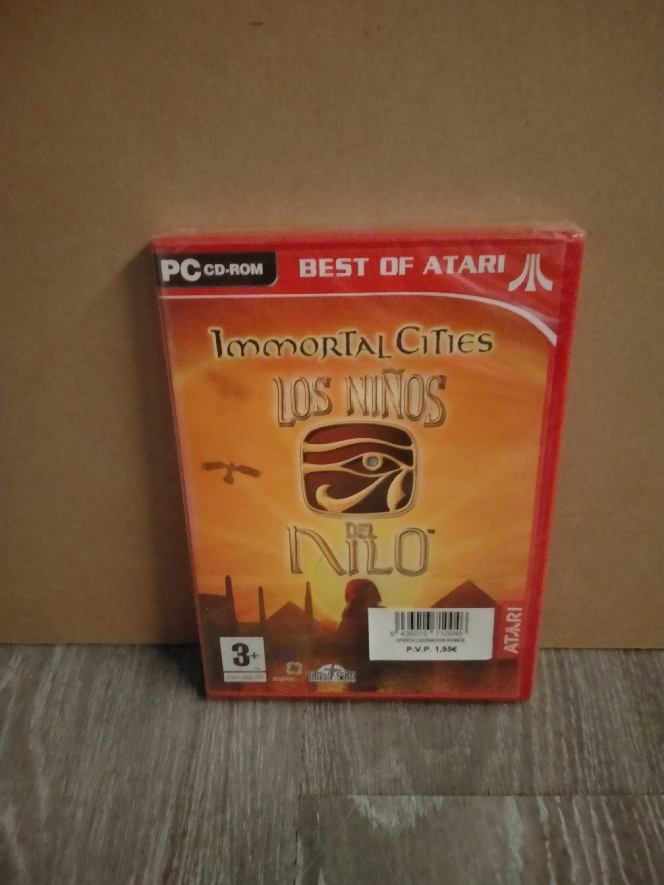

Ficha #000000
Immortal Cities: Los Niños del Nilo
Juego de estrategia y construcción ambientado en el Antiguo Egipto. El jugador gestiona recursos, población y desarrollo urbano a lo largo del Nilo, con un enfoque detallado en la vida individual de los habitantes.
- Formato
- DVD Case
- Plataforma
- Win98 Win2000 WinXP
- Género
- Estrategia Construcción de ciudades Simulación histórica
- Serie
- Todos DVD Case Best of Atari
- Desarrollador
- Tilted Mill Entertainment
- Distribuidor
- Atari
- EAN
- 8436019770046
Contenido de la edición
- Pendiente de documentación.
Preservación
- Protección
- No determinado
- Formato recomendado
- No aplica
- Jugable en virtualización
- No determinado
Pendiente de documentación